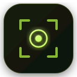

Ctrl
Shift
Space
Primary
Smart Focus
Focus the smartest field on any page

Instant, distraction-free search and input navigation across the web.
Focus the smartest field on any page
Press / to instantly jump to search
Press Esc to unfocus and return to the page
Automatically focus the primary search or input field as soon as trusted pages load.
Customize behavior per domain — prioritize search bars, AI chat inputs, or auto detection.
Pinpoint custom inputs on bespoke single-page applications with surgical CSS rules.
Optional synthesized audio tick confirms focused inputs without visual distraction.